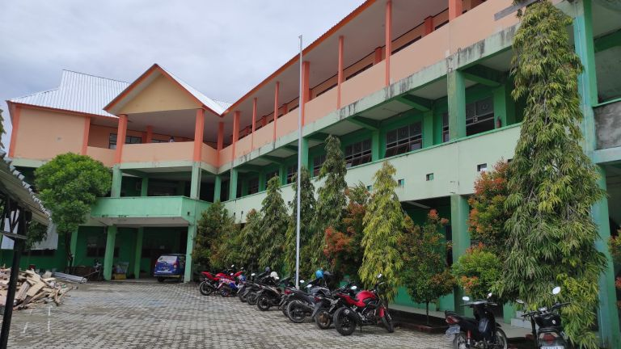

Program Studi Hukum Universitas Muhammadiyah Papua hadir sebagai pusat pengembangan ilmu hukum yang berorientasi pada keadilan, kemanusiaan, dan pembangunan masyarakat Papua yang beradab dan berkemajuan.
Baca Selengkapnya →Universitas unggul, berbudaya, dan berwawasan lingkungan tahun 2030.
Informasi dan kegiatan terkini seputar Program Studi Hukum UMP
Selamat datang di website Program Studi Hukum UMP. Kami berkomitmen mencetak sarjana hukum yang berintegritas, profesional, dan peduli pada keadilan masyarakat Papua.
Profil Ketua Prodi →Mendukung proses belajar dan praktik hukum mahasiswa